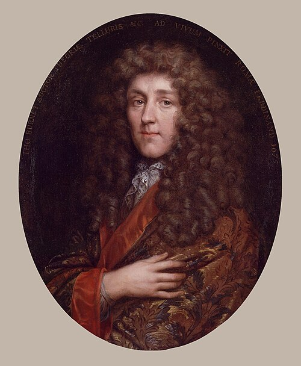
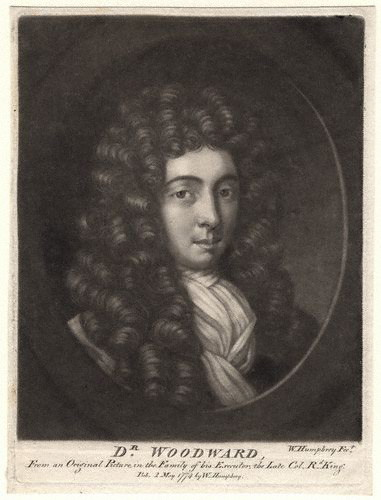
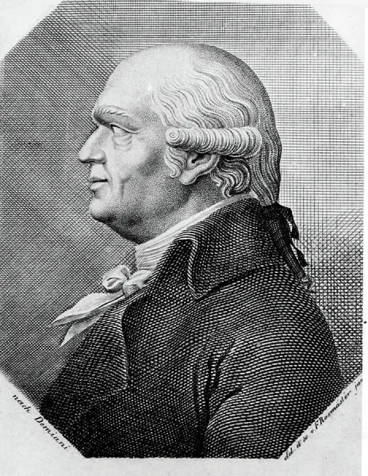
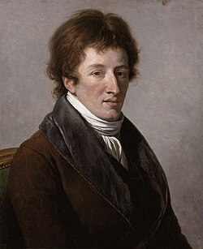
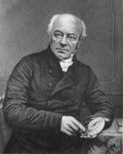
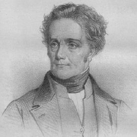

Differing from a cosmologist, a cosmogonist studies the "beginning" or creation of the cosmos with a greater focus on origins instead of structure and evolution. The term stems from the Greek work Kosmogonia (creation of the world) and is generally a more historical title that is not used by modern scientists.
Historical Catastrophists Pt. 1
Article researched and written by the author of this website, Tyler V. (BraveCat)
Posted Mar. 8th, 2026
Overarching Insight
The history of catastrophism is a story of recurring tension between two primary legitimate scientific instincts;
1) Uniformitarian instinct: To explain the past by the present using conservative measures which are rigorous and resistant to special pleading.
2) Catastrophist instinct: To follow the evidence wherever it leads, even to conclusions that exceed present experience.
Prominent Historical Figures From The 1600s - 1800s
Thomas Burnet (1635–1715)

Role: English theologian, clergyman, and early cosmogonist
Thomas Burnet occupies a fascinating position at the intersection of theology and proto-geology. His magnum opus, Tellurius Sacra (The Sacred Theory of The Earth) published in Latin in 1681 and in English in 1684-1690, was one of the first systematic attempts to explain the entire history of the Earth through a coherent narrative. Albeit a theory deeply rooted in biblical chronology.
Core theory - The Sacred Theory of The Earth
Burnet proposed that the original Earth was a perfectly smooth, featureless sphere, essentially an "egg" with a thin, dry crust covering a vast subterranean abyss of water. This pristine world had no mountains, no oceans on the surface, and no seasons (the axis was perfectly upright). It was, in his view, the paradisiacal world of Genesis.
Thomas describes the catastrophe of Noah's Flood as the resulting chaos that produced the rugged landscape we see today and the seasons themself. Burnet explicitly tried to explain Earth's features through natural physical processes rather than direct miraculous intervention even under the framework of biblical genesis. He argued that God set up the initial conditions and let natural law produce the resulting events.
Newton's Correspondence
Around 1680-1681 Burnet met with Isaac Newton and he suggested some modifications. For instance, that the original Earth might have rotated slower, creating longer "days" in Genesis. This showed a level of importance from Newton regarding Burnet's work which became popular at the time, although his theological controversies would cost him his chance at becoming Archbishop of Canterbury.
Relevance and Limitations.
Thomas Burnet established the template that later catastrophists would follow. That the present Earth bears the scars of sudden, violent transformation rather than slow, incremental change. His mechanism (crustal collapse) prefigures later crustal displacement theories, and his cyclical cosmology (creation → catastrophe → renewal) resonates with modern cyclical catastrophism.
However, Burnet had no real geological fieldwork, no fossil evidence, and no concept of deep time. His theory was speculative natural philosophy driven by theology. Yet his ambition to create a unified physical history of the Earth pioneered the topic for later figures.
John Woodward (1665–1728)

Role: English naturalist, physician, and professor of physic at Gresham College, London.
Woodward was one of the first thinkers to use actual fossil and geological observations to support a catastrophist framework. His principal work, An Essay toward a Natural History of the Earth (1695), was grounded in extensive specimen collection. This collection became the foundation of the Woodward Professorship at Cambridge and the Sedgwick Museum.
Core Theory — The Dissolution and Redeposition
Woodward proposed that during Noah's Flood, the entire solid substance of the Earth was dissolved. Not just merely submerged, but literally broken apart and suspended in the floodwaters. As the waters receded, this suspended material settled out according to specific gravity, with the heaviest materials sinking first and lighter materials depositing on top. This, he argued, explained the layered nature of geological strata.
Fossils, in his scheme, were the remains of organisms that had been living before the Flood and were entombed in the settling sediment. Their distribution across strata reflected not evolutionary sequence but differential settling during a single catastrophic event.
Key details and Limitations
Woodward was a meticulous collector. He gathered over 9,400 specimens of fossils, minerals, and rocks, catalogued them carefully, and used them as empirical evidence. This was a significant advance over Burnet's purely theoretical approach. He genuinely tried to let observations guide his conclusions, even if his interpretive framework was flawed.
His settling-by-gravity mechanism was testable and was tested, and it failed. Critics like John Arbuthnot pointed out that fossils do not appear sorted by density in the geological record. Heavy shells appear in upper strata, light materials appear at depth, and the pattern is far more complex than simple gravitational sorting would predict. Woodward never satisfactorily answered these objections.
Catastrophist Relevance
He introduced the critical idea that strata themselves are records of catastrophic events, a concept that Cuvier would later develop far more rigorously. His insistence on using physical specimens to support geological theories, however imperfectly, helped establish the empirical tradition in Earth science.
His work also planted the seed of a key catastrophist argument: that the distribution of fossils (marine organisms found on mountaintops, tropical species in temperate zones) demands explanation through dramatic, sudden events rather than slow processes.
Abraham Gottlob Werner (1749–1817)

Role: German geologist and mineralogist; professor at the Freiberg Mining Academy in Saxony.
Werner was arguably the most influential geology teacher of the 18th century. Though he published relatively little, his lectures attracted students from across Europe, and his ideas dominated geological thinking for decades. He is the founder of Neptunism: The theory that virtually all rocks, including basalt and granite, precipitated from a primordial global ocean.
Core Theory — Neptunism
Werner proposed that in the deep past, the entire Earth was covered by a universal ocean far deeper than any present-day sea. All rocks were formed by chemical precipitation or mechanical deposition from this ocean as it gradually receded. He organized rocks into a temporal sequence:
Primitive rocks (granite, gneiss, schist) — the oldest, precipitated chemically from the primordial ocean.
Transition rocks — mixed chemical and mechanical deposition as the ocean began to recede.
Flötz (stratified) rocks — sedimentary deposits from the receding ocean, containing fossils.
Alluvial rocks — the most recent, deposited by rivers and local floods.
Volcanic rocks — the youngest and least significant, produced by local burning of coal seams.
Significance and Limitations
Werner's system was remarkably systematic for its time. He provided a coherent stratigraphic framework that students could apply in the field. His classification of minerals by external characteristics (rather than chemical composition) was practical and influential.
The catastrophist dimension lies in his insistence on rapid, large-scale events. The recession of the global ocean was not infinitely slow, Werner envisioned dramatic episodes of flooding and retreat with different rock formations precipitating during different phases. This is fundamentally different from modern sedimentology, which sees deposition as ongoing and incremental.
The Neptunist-Plutonist Debate
This was one of the great scientific controversies of the era. James Hutton and his followers (Plutonists/Vulcanists) argued that basalt and granite were igneous, formed from molten material deep within the Earth. Werner insisted they were aqueous precipitates. The resolution decisively favored the Plutonists: basalt is unambiguously volcanic, as field observations in regions like Auvergne (France) and the Scottish Highlands demonstrated. Werner's refusal to travel and see volcanic landscapes for himself was a critical weakness.
Werner's students included many who eventually abandoned Neptunism, most notably Leopold von Buch and Alexander von Humboldt, both of whom became convinced of volcanism's importance after fieldwork. This is a testament to Werner's teaching ability even as it undermined his specific theories.
Robert Jameson (discussed below) was Werner's most faithful British disciple, importing Neptunism to Edinburgh and creating a decades-long rivalry with Huttonian geologists.
Catastrophist Relevance
Werner's framework supported catastrophism by positing that the Earth's current state resulted from dramatic, rapid transformations; A global ocean covering the entire planet, followed by its dramatic retreat. While the specific mechanism was wrong, the structure of his thinking that geological history is punctuated by events of a magnitude not seen today is the essence of catastrophism. His emphasis on a universal ocean also connects to the broader catastrophist tradition of global floods.
Georges Cuvier (1769–1832)

Role: French naturalist and zoologist; professor at the Muséum National d'Histoire Naturelle in Paris; regarded as the founder of vertebrate paleontology and of comparative anatomy as a rigorous discipline.
Cuvier is the central figure in the history of catastrophism, the person who gave the concept its most scientifically rigorous and empirically grounded formulation for his time. His influence on biology, paleontology, and geology was immense, and his catastrophist framework dominated European science for decades.
Core Theory — Revolutions of the Globe
In his landmark work Recherches sur les ossemens fossiles (Researches on Fossil Bones, 1812, with an influential introductory essay later published separately as Discours sur les révolutions de la surface du globe), Cuvier laid out his catastrophist vision.
Extinction is real. Before Cuvier, many naturalists doubted that species could go extinct, it seemed to imply imperfection in God's creation. Cuvier demonstrated conclusively, using his mastery of comparative anatomy, that fossil organisms like the mammoth (Mammuthus) and the mastodon (Mammut americanum) were distinct species with no living counterparts. He proved this by meticulous comparison of their skeletal anatomy with living elephants. He similarly demonstrated the extinction of the Irish elk (Megaloceros), giant ground sloths (Megatherium), the Palaeotherium (an extinct relative of horses), and the Anoplotherium — animals he reconstructed from fragmentary Paris Basin fossils with astonishing accuracy.
Extinctions are sudden and simultaneous. Cuvier observed that in the geological record around Paris, entire assemblages of fossils disappear abruptly at certain stratigraphic boundaries. One layer contains a rich fauna, the next layer above contains completely different organisms or none at all. There is no gradual transition. He interpreted these sharp breaks as evidence of sudden catastrophic events, "revolutions" that wiped out the existing fauna.
Multiple catastrophes, not one. Unlike earlier catastrophists who focused on a single biblical flood, Cuvier argued for a series of revolutions throughout Earth history. Each revolution destroyed the existing biota in a region, and the area was subsequently repopulated by organisms migrating from areas that had been spared. The most recent revolution, he suggested, occurred roughly 5,000–6,000 years ago and might correspond to the biblical flood, but earlier revolutions had no biblical parallel.
The present is NOT the key to the past (contra Hutton and later Lyell). Cuvier argued that the forces that produced these revolutions were of a magnitude and intensity not observed in the present day. The present world's slow, gradual processes such as erosion, sedimentation, and slow climate change are fundamentally inadequate to explain the sudden breaks in the fossil record. This is the anti-uniformitarian core of catastrophism.
Influence and Significance
Cuvier's influence was enormous. His catastrophism became the dominant geological paradigm in France and much of continental Europe until the mid-19th century. Alcide d'Orbigny, his follower, extended catastrophism to its extreme, identifying 27 separate creations and destructions in the fossil record.
Cuvier's comparative anatomy was revolutionary in its precision. He famously claimed (with some exaggeration, but not much) that he could reconstruct an entire animal from a single bone, because the functional integration of an organism constrains the form of every part. This principle, the "correlation of parts", allowed him to identify extinct species with remarkable confidence.
His reconstructions of Palaeotherium and Anoplotherium from fragmentary remains found in the gypsum quarries of Montmartre were spectacular demonstrations. When more complete specimens were later found, his reconstructions proved highly accurate, a powerful validation of his methods.
Cuvier engaged in a famous debate with Étienne Geoffroy Saint-Hilaire in 1830 at the French Academy. Geoffroy argued for a unified body plan across all animals (a forerunner of evolutionary thinking), while Cuvier insisted on four distinct, unbridgeable body plans (embranchements): Vertebrata, Mollusca, Articulata, and Radiata. Cuvier "won" this debate in the eyes of contemporaries, but Geoffroy's ideas proved more prescient in the long run.
Cuvier was explicitly anti-evolutionary. He rejected Lamarck's theory of species transformation, arguing that the stability of species within each period between revolutions, and the abrupt replacement of entire faunas, showed that species do not gradually evolve but are created and destroyed. This anti-evolutionary stance was later seen as his great error, but his observations about abrupt faunal turnover were essentially correct. They describe what we now call mass extinctions.
His student and collaborator Alexandre Brongniart helped Cuvier map the Paris Basin strata, producing one of the first detailed stratigraphic columns correlating rock layers with their fossil content. This work demonstrated the principle of faunal succession, that different strata contain distinctive fossil assemblages which became a cornerstone of stratigraphy.
Catastrophist relevance
Cuvier is the intellectual father of scientific catastrophism. His core insights that extinction is real, that it can be sudden and simultaneous across many species, and that the forces causing it may exceed anything observed today are now mainstream science. The asteroid impact theory of Alvarez et al. (1980) is essentially Cuvierian catastrophism vindicated with a specific mechanism. Cuvier's error was not in recognizing catastrophic extinction but in rejecting evolution as the mechanism that produces new species after each catastrophe.
William Buckland (1784–1856)

Role: British geologist and paleontologist; first professor of geology at Oxford University; later Dean of Westminster.
Buckland was one of the most colorful and influential geologists of the early 19th century, famous for his eccentricities (he allegedly tried to eat his way through the entire animal kingdom), his theatrical lectures, and his determined efforts to reconcile geology with scripture.
Core Theory — Diluvialism and Cave Geology
Buckland's early catastrophism centered on the concept of a recent universal flood (diluvium) as the last great catastrophe to shape the Earth's surface. His key works were:
Vindiciae Geologicae (1820) — his inaugural lecture at Oxford, arguing that geology confirms scriptural history.
Reliquiae Diluvianae (Relics of the Flood, 1823) — his major work on cave fossils as evidence for the flood
Key Details and Significance
Buckland's most famous investigation was of Kirkdale Cave in Yorkshire (1821–1822). The cave contained a jumbled assemblage of bones from hyenas, elephants, rhinoceroses, hippopotamuses, horses, deer, and other animals. Many of these species are now found only in tropical regions. Buckland meticulously analyzed the bones and concluded that the cave had been a hyena den (he confirmed this by comparing the gnaw marks and coprolites, or fossilized feces, with those produced by living hyenas at a menagerie). The hyenas and their prey had lived in Yorkshire during a warmer period, and all had been suddenly destroyed and the cave sealed by the Flood.
This investigation was a masterpiece of forensic paleontology. Buckland's identification of coprolites and his reconstruction of the cave's ecology was genuinely innovative. His conclusion that the cave showed evidence of pre-flood habitation followed by sudden destruction was logical within his framework.
Buckland also investigated the "Red Lady of Paviland" (1823) which was actually a male skeleton stained with red ochre, found in a Welsh cave alongside mammoth bones and ivory artifacts. Buckland, constrained by his biblical chronology, interpreted the skeleton as a Roman-era burial, refusing to accept that humans could have coexisted with extinct animals. We now know the skeleton is approximately 33,000 years old, one of the earliest known anatomically modern human burials in Western Europe.
Critical evolution of his views
Buckland's catastrophism evolved significantly over his career. Initially, he was a committed diluvialist, arguing that geological evidence supported a single, recent, universal flood. However, under the influence of Louis Agassiz (see below), Buckland abandoned diluvialism in favor of glacial theory in the late 1830s. He recognized that many features he had attributed to flood action such as erratic boulders, polished rock surfaces, and moraine deposits were better explained by ice sheets. This was a major intellectual shift and showed genuine scientific integrity.
Buckland's relationship with Charles Lyell was complex. Lyell, who was his student and later rival, developed strict uniformitarianism partly in reaction against Buckland's catastrophism. Yet Buckland was far from a rigid thinker, he adapted to new evidence more readily than his caricature suggests.
He contributed significantly to the study of coprolites, essentially founding the field of trace fossil analysis. His 1829 paper on coprolites from ichthyosaurs demonstrated that these animals ate fish and smaller ichthyosaurs, reconstructing ancient food webs from fossilized feces.
Catastrophist relevance
Buckland represents the transition from biblical catastrophism to scientific catastrophism. His early diluvialism was theologically motivated, but his methods of careful fieldwork, comparative anatomy, and forensic reconstruction of past environments were genuinely scientific. His willingness to abandon previous theories in favor of glaciation when evidence demanded it shows that catastrophism, at its best, follows evidence rather than dogma. His cave investigations also established that faunal assemblages radically differentiate from the presently inhabited regions that are now temperate, a key observation for any catastrophist framework.
Robert Jameson (1774–1854)

Role: Scottish geologist and mineralogist; Regius Professor of Natural History at the University of Edinburgh for over 50 years (1804–1854).
Jameson was the primary British champion of Werner's Neptunism and a significant figure in early 19th-century geological education, though his reputation has been somewhat overshadowed by more charismatic contemporaries.
Core Theory and Contributions
Jameson studied under Werner at Freiberg and became his most committed British advocate. He imported Neptunist ideas wholesale to Edinburgh, creating a direct intellectual conflict with the Huttonian school (led by John Playfair) that was centered in the same city.
He interpreted Scottish geological formations through a Neptunist lens, arguing that basalts and trap rocks were aqueous precipitates rather than volcanic products. This put him directly at odds with field evidence from Arthur's Seat and other Edinburgh-area volcanic formations, a tension that increasingly strained his position.
Jameson founded the Wernerian Natural History Society in Edinburgh (1808), which became an important forum for scientific discussion. Ironically, many papers read before the society presented evidence that undermined Neptunism.
He edited the Edinburgh New Philosophical Journal and was responsible for the Edinburgh edition of Cuvier's work, helping disseminate catastrophist ideas in Britain.
Career as A Professor
Jameson's influence was enormous. His students included Charles Darwin, who attended his lectures in 1826–1827 and found them so dull that he vowed never to study geology again (a resolution he famously broke). Robert Grant, Edward Forbes, and many other notable naturalists also passed through his classes.
Jameson supported catastrophist interpretations of the geological record, arguing that the succession of rock formations and fossils reflected sudden, large-scale events, primarily floods and dramatic withdrawals of water. He saw the geological record as a series of distinct episodes rather than a continuous, gradual process.
Like many Neptunists, Jameson gradually and quietly retreated from strict Wernerism as evidence accumulated, though he never publicly repudiated his master's system. By the 1820s–1830s, he was more eclectic in his approach, incorporating volcanic and plutonic explanations where the evidence demanded.
Catastrophist relevance
Jameson's importance lies primarily in his role as an institutional conduit for catastrophist ideas in Britain. Through his teaching, editing, and organizational activities, he ensured that Nuptunist and Cuvierian catastrophism had a strong presence in British science. His resistance to uniformitarianism helped maintain the catastrophist perspective as a legitimate alternative, even as Lyell's ideas gained ascendancy.
Louis Agassiz (1807–1873)
Role: Swiss-born American naturalist, glaciologist, and zoologist; professor at the University of Neuchâtel and later at Harvard University, where he founded the Museum of Comparative Zoology.
Agassiz is one of the towering figures of 19th-century natural history. While he is best known for his Ice Age theory, his contributions span ichthyology, embryology, biogeography, and the philosophy of biology. His catastrophism is distinctive because it replaces water with ice as the agent of global transformation.
Core Theory — The Ice Age (Die Eiszeit)
Agassiz proposed in his landmark 1840 work Études sur les glaciers (Studies on Glaciers) that vast ice sheets had once covered much of Europe, from the North Pole to the Mediterranean and Caspian seas. This was not a gradual process but a sudden catastrophic event that killed organisms rapidly and reshaped landscapes dramatically.
Agassiz initially proposed a single Ice Age, but evidence gradually accumulated for multiple glaciations separated by warmer interglacial periods. This was confirmed by later workers and is now a cornerstone of Quaternary geology. The current understanding recognizes dozens of glacial-interglacial cycles over the past 2.6 million years, driven by Milankovitch orbital cycles.
Key Details and Development of the Theory
The idea of past glaciation was not entirely original to Agassiz. Swiss engineers like Ignace Venetz and naturalists like Jean de Charpentier had argued since the 1820s that Alpine glaciers had once been far more extensive, based on evidence like erratic boulders, moraines, and polished/striated rock surfaces far from any current glacier. But these men proposed only local expansion of Alpine glaciers.
Agassiz's radical contribution was to globalize the concept. After visiting Charpentier and conducting his own fieldwork on the Aar Glacier (where he established a research station called the "Hôtel des Neuchâtelois" on the glacier itself), Agassiz proposed that a single great ice sheet had covered the entire Northern Hemisphere. He presented this idea to the Swiss Society of Natural Sciences in 1837, shocking his audience.
Agassiz envisioned the onset of glaciation as sudden and catastrophic. He described a "great winter" (Eiszeit) descending rapidly, freezing megafauna in place. A concept strikingly similar to later ideas about flash-frozen mammoths. He wrote dramatically of the cold spreading "over the surface of the earth like a vast winding-sheet," snuffing out life.
List of Collective Evidence
Erratic boulders — enormous rocks of foreign geology sitting on bedrock of completely different composition, sometimes perched precariously on hilltops. Agassiz showed these had been transported by glaciers and deposited as the ice melted.
Moraines — ridges of debris marking the former edges of glaciers, found far from any present-day ice.
Striated and polished rock surfaces — parallel scratches and smooth surfaces on bedrock, caused by rocks embedded in the base of glaciers grinding across the surface.
Roches moutonnées — asymmetrically shaped rock outcrops smoothed on one side and rough on the other, formed by glacial action.
U-shaped valleys — valleys with characteristic cross-sections formed by glacial erosion, contrasting with the V-shaped valleys of river erosion.
Controversy and Legacy
Agassiz visited Britain in 1840 and took Buckland and other geologists on field trips to Scotland, Ireland, and northern England. He showed them glacial features they had previously attributed to floods. Buckland was convinced and abandoned diluvialism for glacial theory. Charles Lyell was initially persuaded but later wavered. Charles Darwin was convinced after finding glacial evidence in Wales.
Many geologists resisted. Some argued the evidence could be explained by icebergs floating on flood waters (the "drift" theory). Others objected to the mechanism, asking what could cause such a dramatic cooling? Agassiz had no satisfactory answer to this question.
Like his teacher Cuvier, Agassiz was a committed anti-evolutionist and a believer in special creation. He argued that each Ice Age catastrophe wiped out existing life, and God created new species afterward. He maintained this position even after Darwin's Origin of Species (1859), becoming increasingly isolated in the scientific community. His creationism was intertwined with deeply problematic polygenist racial theories. He argued that different human races were separately created in different geographic zones, a position now universally rejected and recognized as pseudoscientific racism.
Catastrophist relevance
Agassiz introduced ice as a catastrophic agent, a concept that remains central to modern understanding of Earth's history. The Quaternary ice ages caused massive extinctions, dramatic sea-level changes (120+ meters between glacial maxima and interglacials), wholesale reorganization of ecosystems, and radical landscape transformation. While the mechanism proved to be cyclical (Milankovitch cycles) rather than a single divine catastrophe, the scale and speed of ice age changes align with catastrophist thinking. The Younger Dryas event (~12,900–11,700 years ago) was a sudden return to near-glacial conditions lasting ~1,200 years which is particularly relevant to modern catastrophist narratives.
Conclusive Statements For Part 1
The 1600s-1800s led a fascinating journey to understanding ancient history regarding massive changes that happen within rapid time frames. The key figures covered in this article shaped many of the institutional frameworks that opened the door for other scientists and professors to research further. Many of these subjects caused heated debates and ground breaking discoveries from their peers and students alike, theories evolved and new evidence played a part in each one of their works. These are the figures that would lay the ground work for accelerated developments in these fields going forward. To this day evidence both current and past continues to shape the topic of catastrophism which will be covered in the coming chapters to this four part series.